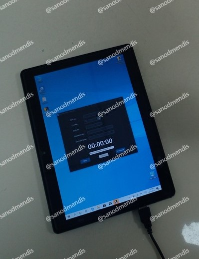
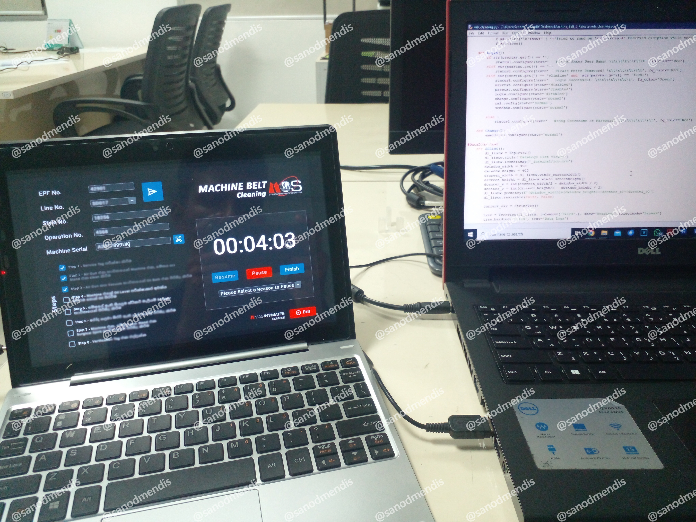
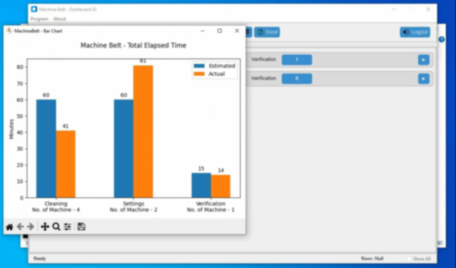
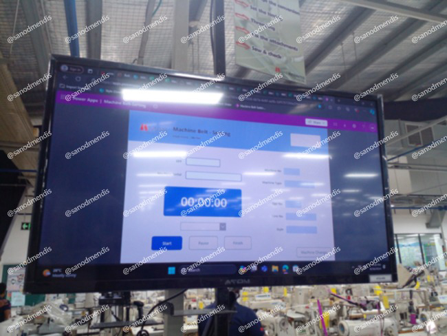
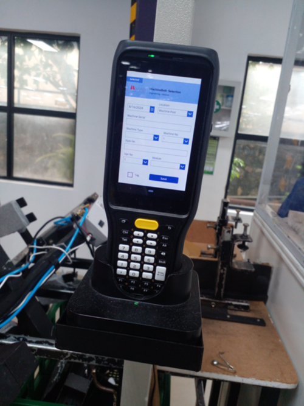
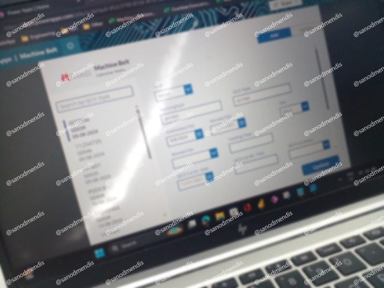
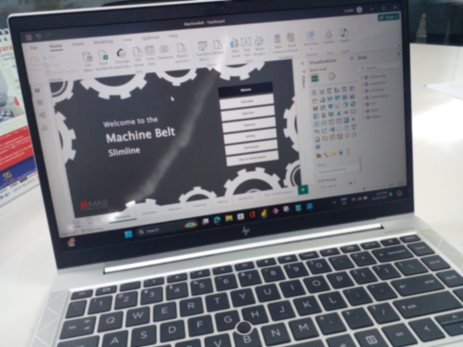
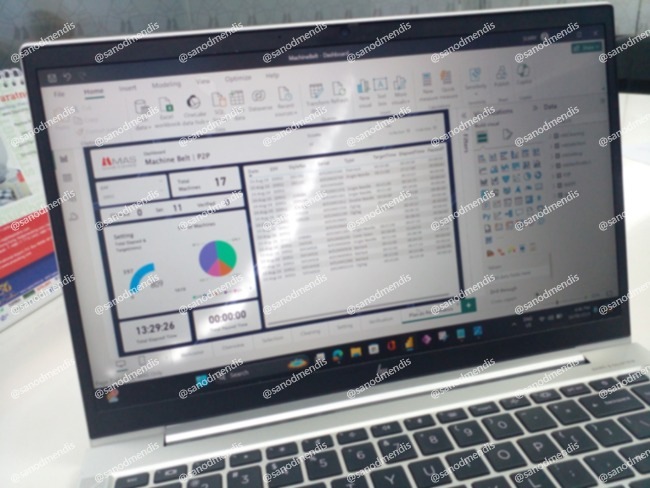

During my time at MAS Holdings – Simline Division, I had the opportunity to play a key role in the Machinebelt Project, a pivotal initiative aimed at enhancing operational efficiency in the manufacturing process. I initially joined as the sole software developer, working under the MOS (Manufacturing Operations Systems) department.
Python-Based Prototype

Initial Python prototype with tablet-optimized interfaceThe project began with a lean tech stack. As per the initial request, I developed a fully functional prototype using Python, optimized for tablet devices. This version used lightweight TXT and CSV files as its database, ensuring offline functionality and quick deployments.
Key Features Implemented:
- Built-in barcode scanner that uses the tablet camera for real-time scanning
- Custom on-screen keyboard for smooth data entry in factory environments
- Email integration module for automated reporting and data sharing
This version served as a robust proof-of-concept and was actively used in live environments.
Migration to SQL and Feature Expansion

Enhanced system with SQL database integrationRecognizing the need for scalability and performance, I collaborated closely with management to migrate the system to an SQL database. This transition laid the foundation for a range of new capabilities.
New Capabilities Added:
- Interactive dashboards for production insights and real-time monitoring
- A full-fledged admin panel to manage users, permissions and configurations
- Notification system to alert stakeholders of anomalies and critical updates
- Performance and UX improvements tailored to floor-level usability

Interactive dashboard for production monitoringEnterprise Transformation Using Power Platform

PowerApps application interfaceTo align with the company's strategic tech stack, I was later tasked with rebuilding the entire solution using Microsoft Power Platform. I successfully developed the full application using PowerApps, which integrated seamlessly with enterprise data systems.
For analytics and insights, I designed interactive Power BI dashboards that provided managers with live data on production metrics, equipment efficiency and operational trends.

Mobile app version
Admin panel interfacePower BI Analytics Dashboards

Production metrics dashboard
Equipment efficiency analyticsBeyond Machinebelt: Contributing Across Projects
Following the success of the Machinebelt Project, I was invited to contribute to other high-impact digital initiatives within the organization. My ability to work across multiple platforms—from Python to low-code tools like PowerApps and Power BI—enabled me to deliver solutions that were both technically sound and aligned with business goals.